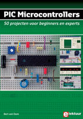

may 2009
Stef's PIC-pages moving slowly to PyLab_Works
|
Python Pscyco |
Numpy Scipy MatPlotLib PyODE Hidden Markov Modelica |
Matlab |
wxPython VPython PIL |
|
|
PyJamas JavaScript |
Warning: all JAL related issues on this site, only yields for JAL v2.0 and up (and not for JAL v0.4.xx, often interpreted as JAL v4.xx)
March 2008
|
Dit is een typisch "Bert-boek", hij vertelt je precies genoeg (wat overigens al een hele hoop is) om je nog nieuwsgieriger te maken. Het boek bespreekt op zeer onderhoudende wijze de theorie en de praktijk van (zelf-) lerende robots, waarbij de PIC microcontroller, de programmeertaal JAL en eenvoudige mechanica worden gebruikt. Niet alleen de techniek wordt behandeld, maar continue wordt de vergelijking gemaakt met het gedrag van levende wezens, zo wordt een robot gebouwd die zich eerst als schuchtere zwerver gedraagt, vervolgens evolueert naar een buiten mens om tenslotte te eindigen als jager. Alhoewel ik geen expert ben op het gebied van robotica, denk ik toch te mogen stellen dat dit boek een vrij volledig overzicht geeft van de theoriën en toegepaste technieken in de (zelf-) lerende robotica. De gebruikte hardware, die in ieder project wordt toegepast, is eenvoudig zelf te maken, ook als geen ervaring met electronica of mechanica hebt. Maar zelfs zonder hardware is dit boek reuze interessant, door de vele leuke programmas die gewoon op een PC gedraaid kunnen worden en de vele verwijzingen naar literatuur en websites. Een vertaling naar het Engels zou niet mogen ontbreken., kortom "see for yourself" . |
"Artificial Intelligence", by Bert van Dam, written in Dutch, describes all kinds of interactive and self-learning robots, some of them can be build in real hardware others are only virtual available on a PC. An English translation of the book is expected.
August 2007
|
 |
Degene die ooit met Lego Mindstorms gespeeld hebben, kennen de schrijver van dit boek, Bert van Dam, misschien nog van de "neurale" projecten. Inmiddels is Bert doorgegroeid naar de wereld van de "echte" hardware techniek en heeft zijn ervaringen rondom het gebruik van micro-controllers in een boek vastgelegd. In dit boek wordt op een leuke en aangename wijze, stap voor stap het gebruik van PIC-micro-controllers uitgelegd. Zowel de micro-controller zelf, de gebruikte programmeertaal (JAL V2), een groot aantal sensoren en actuatoren alsook wat noodzakelijke elektronica kennis worden op een bijna poëtische manier aan elkaar geknoopt. Het boek is uitermate geschikt voor beginners, maar ook mensen met een behoorlijke ervaring zullen naast nieuwe ideeën baat hebben bij dit uitermate structureel opgezette boek. Er worden ruim 50 compleet werkende applicaties tot in de kleinste details beschreven, zoals RGB fader, elektrische kaars en ultrasone radar. Maar ook projecten waarbij u zich niet zou gauw iets kunt voorstellen, wat te denken van een "mensen-sensor" of "de gedichtendoos" ? Nieuwsgierig, ga snel naar Bert's site. |
PIC microcontrollers, by Bert van Dam, written in Dutch, describes the use of PIC microcontrollers in combination with JAL V2, based on more than 50 functional applications. An English translation of the book is available, where ?.
May 2006: currently this site is being transferred to the new JAL compiler v2.0
Stef's PIC Pages
A few of my personal links, which I need frequently.
JAL v2
A temporary chapter, devoted to the new JAL compiler v2.
The compiler can be found here ...
The documentation (in different formats) can be found here ....
JALedit, thé JAL Integrated Development Environment (IDE), can be found here ...
My libraries (dated 10 may 2006) can be found here: stef_libs.zip.
The automatic inc-file translation can be found here: inc2jal.zip
My "simple" demos (dated 10 may 2006) can be found here: demos_v2.zip.
JALss package, including the simple demos, can be found JALss+demos.
My RPD demos are still to come.
The discussion about JAL takes place in the Yahoo list.
For compiler developers, there's a dedicacated developers-list.
There's also a web-ring about JAL.
Rapid Prototyping Board
The Rapid Prototyping Board is a very universal and simple to use prototyping board for PICs, on which you can evaluate almost any PIC circuit in a few minutes. News: I'm working on a real PCB in Eagle.
PIC/JAL soft/hard
Both hardware and software information about all kind of peripherals. Here also all my JAL libraries can be viewed / downloaded.
PIC misc.
Some links I find interesting.
JALcc Home
JALcc is a general purpose IDE (Integrated Development Environment) for technical projects, with some special tools for JAL. Due to it's complexity, it's not advised for beginners, use JALedit (thé official JAL v2 IDE) instead !!
JALss Home
JALss is a simulator for PIC and RCX. This simulator was born because I needed it, it hasn't been extended for a number of years and because of my limited time. We have had contact with the developpers of uDEV, to get a better integration with JAL, but this will need some time.
PIC-RCX
Some old stuff about adding PICs to the RCX. Probably this chapter will disappear.
Tools
Some tools (programmers, bootloaders, etc) for the use with PICs.
JAL
Some personal notes about JAL.
Because the organization of these pages is in the hand of a machine, it's advised to use only the following redirector link:
have fun,
Stef Mientki
JALccring designed by Javi